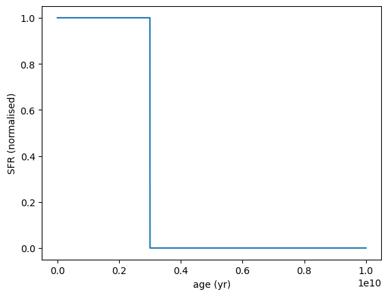
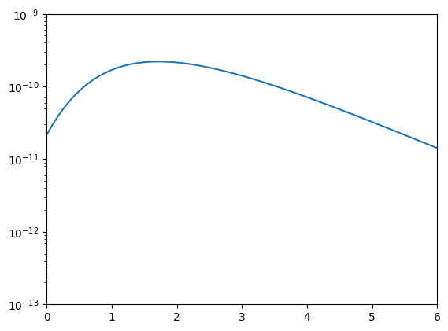
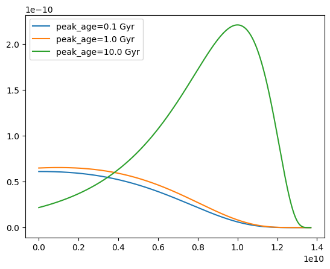

[1]:
import numpy as np
import matplotlib.pyplot as plt
from unyt import yr, Myr, Msun, angstrom
from synthesizer.parametric import SFH
from unyt import unyt_quantity
from synthesizer.parametric import SFH, Stars, ZDist
from synthesizer.grid import Grid
from unyt import yr, Myr, Msun, Gyr, unyt_quantity, Mpc
[2]:
grid_name = "bpass-2.2.1-bin_chabrier03-0.1,300.0.hdf5"
grid_dir = "/Users/sw376/Dropbox/Research/data/synthesizer/grids/"
grid = Grid(grid_name, grid_dir=grid_dir, new_lam=np.logspace(3, 4.2, 1000) * angstrom)
---------------------------------------------------------------------------
FileNotFoundError Traceback (most recent call last)
Cell In[2], line 4
1 grid_name = "bpass-2.2.1-bin_chabrier03-0.1,300.0.hdf5"
2 grid_dir = "/Users/sw376/Dropbox/Research/data/synthesizer/grids/"
----> 4 grid = Grid(grid_name, grid_dir=grid_dir, new_lam=np.logspace(3, 4.2, 1000) * angstrom)
File /opt/hostedtoolcache/Python/3.10.20/x64/lib/python3.10/site-packages/synthesizer/units.py:909, in accepts.<locals>.check_accepts.<locals>.wrapped(*args, **kwargs)
906 finally:
907 toc(f"accepts({func.__qualname__})")
--> 909 return func(*bound.args, **bound.kwargs)
File /opt/hostedtoolcache/Python/3.10.20/x64/lib/python3.10/site-packages/synthesizer/utils/operation_timers.py:98, in timed.<locals>.decorator.<locals>.wrapped(*args, **kwargs)
94 tic(timer_name)
95 try:
96 # Return the wrapped function result unchanged so the decorator
97 # is transparent aside from its timing side effect.
---> 98 return func(*args, **kwargs)
99 finally:
100 # Always stop the timer, even if the wrapped function raises,
101 # so the timing stack remains balanced.
102 toc(timer_name)
File /opt/hostedtoolcache/Python/3.10.20/x64/lib/python3.10/site-packages/synthesizer/grid.py:178, in Grid.__init__(self, grid_name, grid_dir, ignore_spectra, spectra_to_read, ignore_lines, new_lam, lam_lims)
176 self._extract_axes = []
177 self._extract_axes_values = {}
--> 178 self._get_axes()
180 # Read in the metadata
181 self._weight_var = None
File /opt/hostedtoolcache/Python/3.10.20/x64/lib/python3.10/site-packages/synthesizer/grid.py:343, in Grid._get_axes(self)
341 """Get the grid axes from the HDF5 file."""
342 # Get basic info of the grid
--> 343 with h5py.File(self.grid_filename, "r") as hf:
344 # Get list of axes
345 axes = list(hf.attrs["axes"])
347 # Set the values of each axis as an attribute
348 # e.g. self.log10age == hdf["axes"]["log10age"]
File /opt/hostedtoolcache/Python/3.10.20/x64/lib/python3.10/site-packages/h5py/_hl/files.py:555, in File.__init__(self, name, mode, driver, libver, userblock_size, swmr, rdcc_nslots, rdcc_nbytes, rdcc_w0, track_order, fs_strategy, fs_persist, fs_threshold, fs_page_size, page_buf_size, min_meta_keep, min_raw_keep, locking, alignment_threshold, alignment_interval, meta_block_size, track_times, **kwds)
546 fapl = make_fapl(driver, libver, rdcc_nslots, rdcc_nbytes, rdcc_w0,
547 locking, page_buf_size, min_meta_keep, min_raw_keep,
548 alignment_threshold=alignment_threshold,
549 alignment_interval=alignment_interval,
550 meta_block_size=meta_block_size,
551 **kwds)
552 fcpl = make_fcpl(track_order=track_order, track_times=track_times,
553 fs_strategy=fs_strategy, fs_persist=fs_persist,
554 fs_threshold=fs_threshold, fs_page_size=fs_page_size)
--> 555 fid = make_fid(name, mode, userblock_size, fapl, fcpl, swmr=swmr)
557 if isinstance(libver, tuple):
558 self._libver = libver
File /opt/hostedtoolcache/Python/3.10.20/x64/lib/python3.10/site-packages/h5py/_hl/files.py:232, in make_fid(name, mode, userblock_size, fapl, fcpl, swmr)
230 if swmr:
231 flags |= h5f.ACC_SWMR_READ
--> 232 fid = h5f.open(name, flags, fapl=fapl)
233 elif mode == 'r+':
234 fid = h5f.open(name, h5f.ACC_RDWR, fapl=fapl)
File h5py/_objects.pyx:54, in h5py._objects.with_phil.wrapper()
File h5py/_objects.pyx:55, in h5py._objects.with_phil.wrapper()
File h5py/h5f.pyx:106, in h5py.h5f.open()
FileNotFoundError: [Errno 2] Unable to synchronously open file (unable to open file: name = '/Users/sw376/Dropbox/Research/data/synthesizer/grids//bpass-2.2.1-bin_chabrier03-0.1,300.0.hdf5', errno = 2, error message = 'No such file or directory', flags = 0, o_flags = 0)
[3]:
sfh = SFH.Constant(max_age=3E9*yr)
sfh.plot_sfh(t_range=(0, 1E10))

[4]:
# Define a delta function for metallicity
metal_dist = ZDist.DeltaConstant(log10metallicity=-2.5)
print(metal_dist)
# Create the Stars object
stars = Stars(
grid.log10ages,
grid.metallicities,
sf_hist=sfh,
metal_dist=metal_dist,
initial_mass=10**9 * Msun,
)
print(stars.calculate_surviving_mass(grid=grid).to("Msun"))
print(np.log10(stars.calculate_surviving_mass(grid=grid).to("Msun").value))
----------
SUMMARY OF PARAMETERISED METAL ENRICHMENT HISTORY
<class 'synthesizer.parametric.metal_dist.DeltaConstant'>
metallicity: None
log10metallicity: -2.5
----------
---------------------------------------------------------------------------
NameError Traceback (most recent call last)
Cell In[4], line 7
3 print(metal_dist)
5 # Create the Stars object
6 stars = Stars(
----> 7 grid.log10ages,
8 grid.metallicities,
9 sf_hist=sfh,
10 metal_dist=metal_dist,
11 initial_mass=10**9 * Msun,
12 )
14 print(stars.calculate_surviving_mass(grid=grid).to("Msun"))
15 print(np.log10(stars.calculate_surviving_mass(grid=grid).to("Msun").value))
NameError: name 'grid' is not defined
[5]:
# Define a delta function for metallicity
metal_dist = ZDist.DeltaConstant(log10metallicity=-2.5)
print(metal_dist)
# Create the Stars object
stars = Stars(
grid.log10ages,
grid.metallicities,
sf_hist=sfh,
metal_dist=metal_dist,
)
print(stars.calculate_surviving_mass(grid=grid).to("Msun"))
print(np.log10(stars.calculate_surviving_mass(grid=grid).to("Msun").value))
----------
SUMMARY OF PARAMETERISED METAL ENRICHMENT HISTORY
<class 'synthesizer.parametric.metal_dist.DeltaConstant'>
metallicity: None
log10metallicity: -2.5
----------
---------------------------------------------------------------------------
NameError Traceback (most recent call last)
Cell In[5], line 7
3 print(metal_dist)
5 # Create the Stars object
6 stars = Stars(
----> 7 grid.log10ages,
8 grid.metallicities,
9 sf_hist=sfh,
10 metal_dist=metal_dist,
11 )
13 print(stars.calculate_surviving_mass(grid=grid).to("Msun"))
14 print(np.log10(stars.calculate_surviving_mass(grid=grid).to("Msun").value))
NameError: name 'grid' is not defined
Cosmic star formation history¶
[6]:
from astropy.cosmology import Planck18 as cosmo
from astropy.cosmology import z_at_value
import astropy.units as u
age_of_universe = unyt_quantity(cosmo.age(0).value, str(cosmo.age(0).unit))
sfh = SFH.LogNormal(tau=0.6, peak_age=1e10 * yr, max_age=age_of_universe)
# sfh.plot_sfh(t_range=(0, age_of_universe.to(yr).value), log=True)
age = np.linspace(1E7, age_of_universe.to('yr').value - 1E8, 1000)
redshift = z_at_value(cosmo.lookback_time, age * u.yr)
sfr = sfh.get_sfr(age)
plt.plot(redshift, sfr)
# plt.xscale('log')
plt.yscale('log')
plt.xlim(0, 6)
plt.ylim(1e-13, 1e-9)
plt.show()

[7]:
from astropy.cosmology import Planck18 as cosmo
from astropy.cosmology import z_at_value
import astropy.units as u
age_of_universe = unyt_quantity(cosmo.age(0).value, str(cosmo.age(0).unit))
age = np.linspace(1E7, age_of_universe.to('yr').value - 1E8, 1000)
for peak_age in [1e8, 1e9, 1e10] * yr:
sfh = SFH.LogNormal(tau=0.6, peak_age=peak_age, max_age=age_of_universe)
plt.plot(age, sfh.get_sfr(age), label=f"peak_age={peak_age.to('Gyr')}")
plt.legend()
plt.show()
